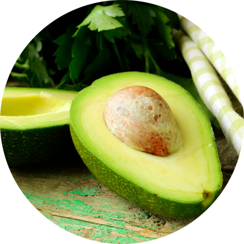
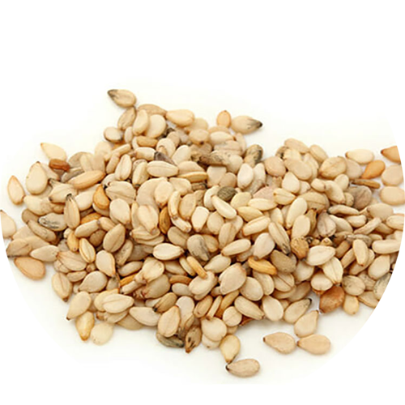
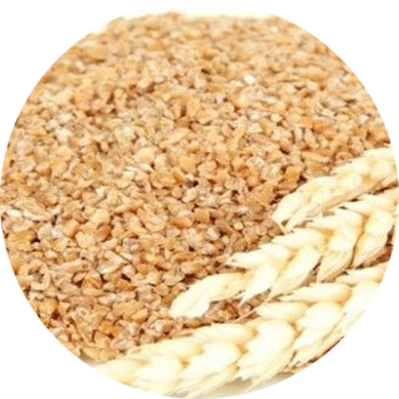
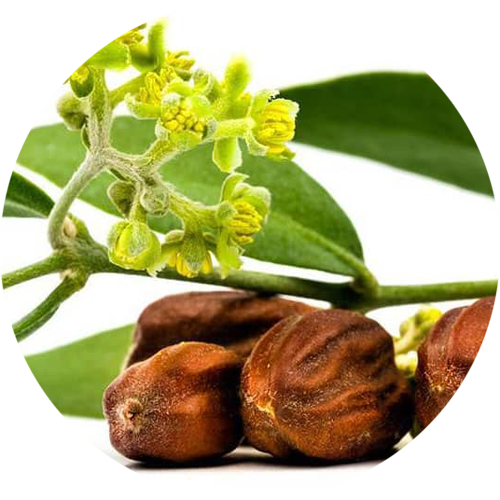
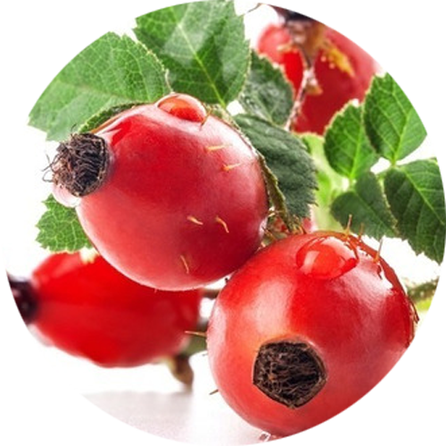
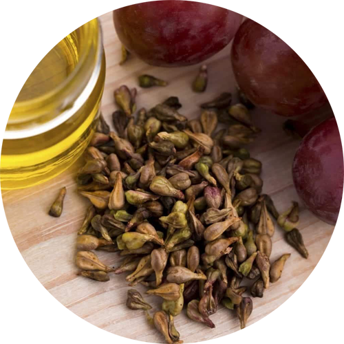

-
Abacate
- Persea americana
O óleo vegetal de Abacate da Phytoterápica é extra virgem, extraído por prensagem a frio da polpa da fruta. Altamente antioxidante, é rico em fitoesteróis, vitaminas A, D e altíssimo teor de vitamina E e ômega 9.
O óleo vegetal de Abacate pode ser extraído tanto da polpa quanto do caroço, porém o óleo do caroço é de coloração amarelada e não possui as mesmas propriedades que o óleo extraído da polpa. Este possui coloração verde intensa e possui fitoesteróis ativos que não estão presentes no caroço.
Ótimo para tratamento capilar, previne a queda de cabelo, fortalece, hidrata, doa brilho e recupera cabelos ressecados.
Na pele previne rugas, ameniza marcas e sinais de expressão, estrias, queloides e rachaduras nos seios. Pode ser usado puro ou como base vegetal para diluir os óleos essenciais.
Inibe a formação de radicais livres, atuando como regenerador, auxilia na hidratação da pele.
-
Amêndoa Doce
- Prunus amygdalus dulcis
A amendoeira é uma árvore de folhas caducas pertencente à família das Rosáceas. Nativa do oeste da Ásia e norte da África, seus frutos secos contêm uma semente rica em ácidos graxos, de onde se extrai o óleo vegetal.
Com alto teor de ômega 9, vitamina A e uma pequena dosagem de vitamina E, o óleo vegetal de Amêndoa Doce é um excelente emoliente para pele e popularmente conhecido por prevenir estrias.
O óleo vegetal de Amêndoa Doce Phytoterápica é um óleo fino, sem cheiro e que proporciona toque seco, não oleoso. Atua contra ressecamento da pele e cabelos, irritação e coceira da pele, estrias e em casos de fragilidade das unhas.
Rico em ácido oleico, é excelente hidratante. Traz maciez e protege os tecidos. Devolve a elasticidade da pele. Muito utilizado na prevenção de estrias. É indicado como hidratante e pós sol.
-
Arnica Montana
- Arnica montana L.
O extrato oleoso de Arnica é extraído das flores, folhas e raízes. É rico em ácido linoleico e oleico, que possuem propriedades hidratantes e emolientes, evitando o ressecamento, descamação e rachaduras na pele.
Tem efeito calmante e tonificante podendo ser usado mesmo em peles sensíveis. Auxilia na prevenção de estrias e promove a elasticidade da pele. É rica em ômega 6 e 9, nutre a pele deixando-a mais saudável.
Muito utilizado em massagens, aquece, relaxa e pode auxiliar aliviando dores musculares, contusões, torções e inchaços.
Para os cabelos previne contra queda e caspas.
-
Calêndula

- Calendula officinalis
O Extrato Oleoso de Calêndula é extraído por maceração das flores em óleo de girassol e é útil como regenerador das células. Em virtude do ácido oleanólico, possui ação calmante e refrescante para peles sensíveis, avermelhadas e delicadas.
O Extrato Oleoso de Calêndula favorece a regeneração do tecido e por isso é indicado para problemas epidérmicos como insolação, assaduras, acne, mamilos ressecados, descamação, pele rachada e picadas de inseto.
Na pele traz maciez, emoliência e suavidade e é rapidamente absorvido. É especialmente indicado para peles delicadas e ressecadas, mas também pode ser usado em pele mista e oleosa. É rico em vitaminas, ácidos graxos, carotenoides e óleos essenciais presentes na flor de calêndula.
Nos cabelos o extrato oleoso de Calêndula serve para dar vitalidade, maciez e brilho. Evita caspa e problemas do couro cabeludo, hidrata e acentua a cor dos cabelos claros, trazendo luminosidade.
-
Camomila Alemã
- Matricaria recutita
Uma das plantas medicinais mais antigas que se tem notícia, o nome científico "Matricaria" vem do grego e significa "útero", pois era muito usada para os distúrbios da mulher.
O extrato oleoso de Camomila Alemã é extraído por maceração das flores em óleo de girassol. É indicado como hidratante, emoliente e calmante.
Excelente para a pele, possui elevado teor de ácido linoleico, previne contra o envelhecimento precoce e queimaduras de sol. Muito útil para peles sensíveis e secas. Muito utilizado em massagens, atua como relaxante em sinergias com óleos essenciais de Lavanda, Bergamota, Gerânio.
Massageando o ventre pode auxiliar em casos de cólicas menstruais, puro sobre a pele ou em sinergia com os óleos essenciais de Artemísia, Gerânio, Sálvia ou Erva Doce.
Nos cabelos promove luminosidade e pode auxiliar em casos de feridas do couro cabeludo.
-
Gergelim
- Sesamum indicum
Extraído por pressão a frio de suas sementes, o óleo vegetal de Gergelim é muito rico em antioxidantes, dentre os quais se destacam a sesamina, a sesamolina e o sesamol, além da vitamina E.
Auxilia no combate aos radicais livres e atua como anti-envelhecimento. É hidratante, melhora a elasticidade da pele e ajuda no clareamento de manchas escuras.
Hidrata e traz nutrição para os cabelos. Possui excelentes propriedades de penetração, fortalece os fios e revitaliza cabelos danificados.
-
Germe de Trigo
- Triticum vulgare
O trigo é nativo do Oriente médio, porém cultivado no mundo todo. O germe de trigo é a ponta que faz germinar o grão de trigo, sendo a parte mais nutritiva da semente, considerado a parte mais nobre, de onde uma nova planta começa a brotar.
O óleo vegetal de Germe de Trigo é rico em ômegas 6 e 9, e vitamina E, um grande aliado no combate à desnutrição da pele, hidratando, fortalecendo e devolvendo-lhe a vitalidade. Indicado para fins de hidratação e umectação da pele e cabelos.
É um excelente óleo para peles com ressecamento, asperezas, rachaduras e hipersensibilidade. Pode ser usado puro tanto na pele como nos cabelos, trazendo sedosidade, brilho, maciez e resistência aos fios capilares.
-
Girassol
- Helianthus annuus
O girassol pertence à família das compostas e seu nome científico deriva do grego "flor do sol", pois ele acompanha a trajetória do sol, do nascente ao poente. De suas sementes extrai-se seu óleo vegetal, muito utilizado em todo mundo.
O óleo vegetal de Girassol é rico em ômega 6 e excelente para peles ressecadas. Hidrata e regenera os tecidos.
O óleo Vegetal de Girassol é extra virgem, emoliente, hidratante e nutritivo para pele e cabelos. Indicado para peles sensíveis e delicadas.
Com alto teor de vitamina E e ômega 9, é ótimo deslizante em massagens, formando uma camada protetora na pele.
Nos cabelos evita o ressecamento e as pontas duplas, hidrata, amacia e dá brilho.
-
Jojoba
- Simmondsia chinensis
O óleo vegetal de Jojoba, como é popularmente conhecido, é na realidade uma cera líquida extraída por prensagem a frio das sementes da planta e muito resistente à oxidação.
É ideal para peles oleosas, pois produz emoliência seca, não deixa a pele e cabelos pegajosos. Rapidamente absorvido, melhora a elasticidade da pele já na primeira aplicação e reduz linhas de expressão.
Nos cabelos, facilita o desembaraço, deixando-o aveludado, flexível e brilhante. Intensifica a queratinização promovendo a regeneração.
No couro cabeludo, desobstrui os folículos, facilitando o crescimento capilar.
-
Rosa Mosqueta
- Rosa canina
Extraído por pressão a frio, o óleo vegetal de Rosa Mosqueta é rico em ômega 3 e 6, além de conter ácido trans-retinoico, responsável pela ativação dos fibroblastos e pela produção de colágeno, auxiliando na regeneração da pele.
Possui beta caroteno, licopeno e vitamina E, antioxidantes que evitam o envelhecimento precoce da pele. Excelente hidratante, pode ser usado em peles secas e com escamação.
O óleo vegetal de Rosa Mosqueta é extra virgem, ameniza manchas, marcas e cicatrizes da pele, queloides, olheiras e bolsas nos olhos, rugas e estrias. Clareia a pele das axilas e virilhas.
-
Semente de Uva
- Vitis vinifera
O óleo vegetal de Semente de Uva é extraído da semente da fruta, de cor esverdeada, muito rico em vitamina E (tocoferol) e ômega 6, bem como vitaminas D e F e polifenóis como resveratrol, que inibe a formação de radicais livres e aumenta a resistência da fibra do colágeno, dentre outros benefícios.
Possui a vantagem de ter a textura mais fina e por isso penetrar mais rapidamente nos poros da pele, é antioxidante e melhora a elasticidade.
Óleo finíssimo e sem cheiro, com alto poder de hidratação na pele e cabelos. É ideal para ser usado com óleos essenciais em massagens. Tonificante e revitalizante da pele. Pode ser usado diariamente como óleo pós banho e também no rosto.